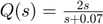
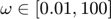
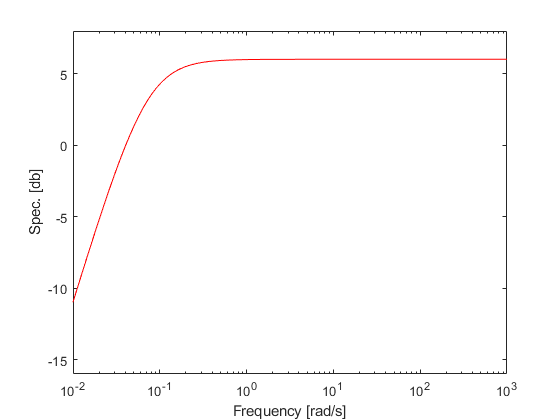
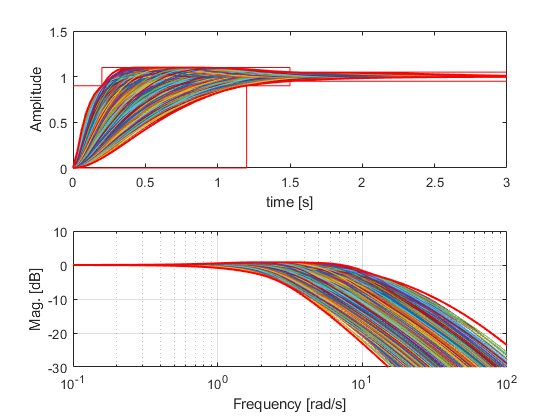
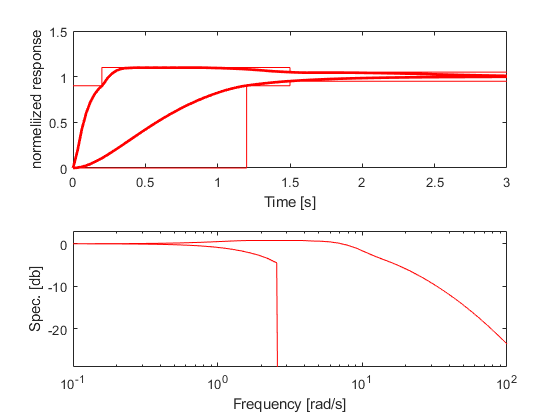
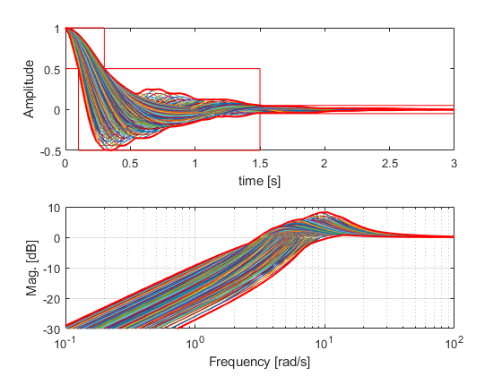
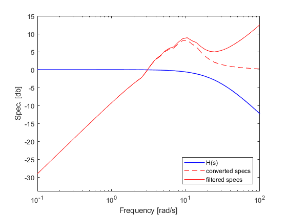

Adding specifications
Contents
Overview
A control design is dectated by design specification. In QFT, the so called Horowitz-Sidi bounds, used for loop-shaping, are computed such that the closed-loop staisfies the design specifications (if the designer knows what he is doing). In QFT all specifications must be finally formulated in the frequency domain, and those that are originally given in the time domain must be translated to the frequency domain. The specification generation and conversion from time to frequency domain is facilitated by the qspc class.
Next the plant and specsifications are used to from a qdesign object which facilitates the design stages, including bound computations.
Frequency Domain Specifications
The usual syntex is
spec = qspc(name,frequency,upper);
where name string gives the specifcation alias, frequency the vector of frequencies over which the specifcation is to be computed, and upper is the upper bound in [dB].
The specification can be viewd by the qspc.show() command.
There are two options to determine the upper bound of the specifications:
- Upper bound given by real numeric scalar/vector in dB. If the upper bound is a vector it must be the same length as w.
- Upper bound given by an LTI (TF , ZPK, FRD). This option is used when the upper bound is given as an LTI object. In case of an FRD object, the frequency inside it must include the frequencies in the vector supplied to qspc.
Exmaple 1: A 6db sensitiveity specificaiton in the range [0.1 100] rad/s is given as
spec = qspc('odsrs',logspace(-1,2,20),6);
Note the naming odsrs which stands for "output disturbance step response specification".
Exmaple 2: upper bound given by the transfer function  over the range .
w = logspace(-2,2,50); % assign the frequency vector Q = qfr([2 0],[1 0.07],w); % compute frequenct response $Q(j\omega)$ sens = qspc('odsrs',w,Q.mag); % construct qspc object show(sens) % display specification
Alternatively, one may input the transfer function as a Control System Toolbox TF, ZPK, or FRD object:
TF = 2*tf([1 0],[1 0.07]); %tf sens_spc = qspc('odsrs',w,TF);
Time Domain Specifications
Open Qsyn readily supports three types of time-domain specifications:
- RSRS -- reference step response spec. (servo)
- ODSRS -- output disturbance step response spec.
- IDSRS -- input disturbance step response spec.
All of which are accessed using dot notation throuhgt qspc class.
Exmaple 3: Add servo specifications with at most 10% overshoot, maximum settling time of 1.5 seconds, and rise time between 0.2 and 1.2 seconds.
w_spc = logspace(-1,2); % frequecny vector for transformation
servo_spc = qspc.rsrs([1.2 0.2],10,1.5,[],w_spc,2.85,3.1)
Creating array of size 4x6000
Reducing to 4x2916
Reducing to 4x2286
Reducing to 4x1547
Reducing to 4x1216
Reducing to 4x983
Reducing to 4x974
Reducing to 4x960
Number of good step-responses: 960
servo_spc =
qspc with properties:
name: 'rsrs'
frequency: [50×1 double]
upper: [50×1 double]
lower: [50×1 double]
timespc: [8×3 double]
timeres: [109×3 double]
 The first argument, [1.2 0.2], defines maximum and minimum rise times (90%); 10 stands for allowed overshoot; 1.5 denotes the maximum settling time; 4th argument stand for delay time which is unspecified (set to zero); w_spc gives the frequency range [rad/s]; 2.85 rad/s is demanded cut-off frequency for the lower frequency domain specification; 3.1 is an instruction that both 2nd and 3rd order approximants of the closed loop transfer function are to be used in a way defined in Horowitz (1993), page 48. More about rsrs can be found by typing help qspc.rsrs.
The computed lower and upper bounds are stored in the qspc object 'servo_spc' under the lower and upper fields. Note that the 2.85 rad/s cut-off is not marked in the above autogenerated plot, but showing the computation results, gives the correct frequency specification:
servo_spc.show
Exmaple 4 (Filtered disturbance): It is desired that the output disturbance will be attenuated with a maximum of 50% undershoot, 1.5 seconds settling time, and between 0.1 to 0.3 seconds to attenuate first 50%. Assume it is known that the output step disturbance enters after some filterring  .
.
w_spc = logspace(-1,2); % frequecny vector for transformation H = qfr([1],[1/25 1],w_spc); % define the filter as a qfr object Hmag = imag(H.response); % take the magnitude dist_spc = qspc.odsrs([0.3 0.1 50],50,1.5,[],w_spc,2); figure, bodeplot(H,'PhaseVisible',0); % show the filter dist_spc.show('freq','--r',gcf); % show bounds w/o the filter dist_spc.upper = dist_spc.upper - Hmag; % we only care about the upper bound dist_spc.show('freq',[],gcf); %show bounds after adding the filter legend('H(s)','converted specs','filtered specs','location','SE')
Creating array of size 2x1600 Reducing to 2x1211 Reducing to 2x1200 Reducing to 2x764 Reducing to 2x695 Reducing to 2x550 Reducing to 2x478 Reducing to 2x421 Number of good disturbance step-responses: 421 Plotting... 